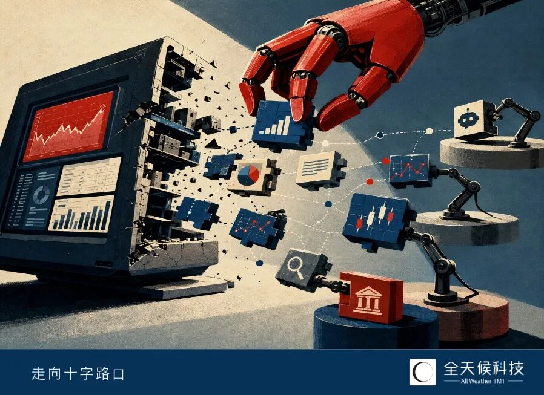
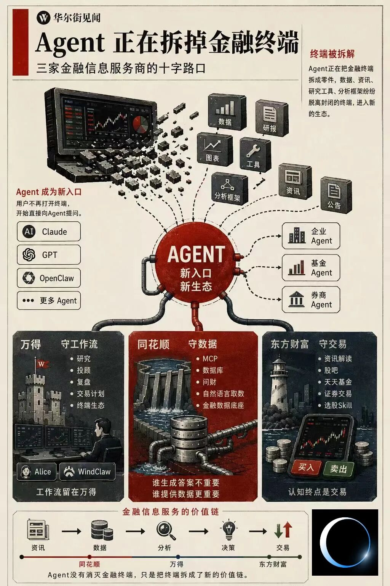

🤖 Agent正在拆掉金融终端
Agent Is Dismantling Financial Terminals

Agent正在把金融信息服务行业沿用二十多年的终端terminal[ˈtɜːmɪnl] n. 终端设备模式拆成零件。
5月下旬，万得发布金融AI生态ecosystem[ˈiːkəʊsɪstəm] n. 生态系统平台AIFin Market，首次向外部Agent开放MCP能力，使其能够直接调用万得的数据、工具和研究能力。
而在万得之前，其余两家头部金融信息服务商已经率先pioneer[ˌpaɪəˈnɪə] v. 率先；开创迈出一步：
3月12日，同花顺推出iFinD MCP，希望让外部Agent直接调用自身数据库database[ˈdeɪtəbeɪs] n. 数据库；同日，东方财富上线Skills体系，将资讯搜索、金融数据查询和智能选股等能力封装成可调用模块module[ˈmɒdjuːl] n. 模块。
表面上看，三家头部金融信息服务商，已经达成了开放的共识consensus[kənˈsensəs] n. 共识——把过去封装在金融终端里的能力拆出来，向Agent开放。
但真正值得关注的，或许不是MCP还是Skill，而是最先选择了什么，又试图attempt[əˈtempt] v. 试图守住些什么。
过去二十多年里，金融信息服务商争夺contest[kənˈtest] v. 争夺的是终端席位：基金经理打开万得，投资者打开同花顺，股民浏览东方财富，数据、资讯、研究工具被封装在同一个入口之中；
随着用户开始通过Agent查数据、读公告、筛选股票、分析基金时，数据、研究工具、分析框架framework[ˈfreɪmwɜːk] n. 框架乃至投资方法论，也开始从终端中被拆解，以MCP、Skill等形式进入新的生态。
如今，金融信息服务商们的课题已然变成了，当用户不再直接打开终端时，自己还能在价值链的哪个环节segment[ˈseɡmənt] n. 环节发挥作用？
或许三家公司终有一日会覆盖所有环节，但在这场变革开始时，它们最先选择开放什么、守护什么，依然折射reflect[rɪˈflekt] v. 折射；反映出各自不同的基因。

尽管时间线靠后，但万得愿意向外部Agent开放数据库，仍旧在不少人的意料expectation[ˌekspekˈteɪʃn] n. 意料；预期之外。
过去二十多年，万得最核心的护城河moat[məʊt] n. 护城河从来不是数据，甚至不是机构客户本身，而是机构客户沉淀在终端中的工作流；
市场中大量的基金经理、券商分析师和银行研究员依赖rely[rɪˈlaɪ] v. 依赖通过万得获取数据、资讯、使用工具，甚至完成研究工作。
这种以终端制胜的模式，最早源于美国金融信息巨头giant[ˈdʒaɪənt] n. 巨头；巨擘彭博。
1990年代，彭博在全球债市扩张expand[ɪkˈspænd] v. 扩张、共同基金兴起的背景下抓准机会，从数据工具进化为工作平台，至2000年代初，已有大量的欧美投行将“熟练使用彭博”列入招聘要求。
同一时期，万得创始人陆风敏锐keen[kiːn] adj. 敏锐的觉察到商机，通过复刻彭博闯出了国内的终端之路。
也正因如此，无论近几年的技术如何演进，万得始终在做同一件事，将工作流workflow[ˈwɜːkfləʊ] n. 工作流留在终端内。
2023年，ChatGPT引爆第一轮生成式AI浪潮wave[weɪv] n. 浪潮；
彭博顺势推出拥有500亿参数parameter[pəˈræmɪtə] n. 参数自研GPT，万得推动“Wind Alice文本生成类算法”完成备案，并在两年内逐步构建集成于终端内部的智能客服、投顾助手等AI产品矩阵。
2025年，Agent、多智能体与MCP生态快速rapid[ˈræpɪd] adj. 快速的发展；
二者继续强化strengthen[ˈstreŋθn] v. 强化终端，万得推出WindClaw、Alice Agent、智能金融操作系统Alice 27等AI产品，以期继续将机构工作者留在终端生态之内。
但在新一轮的技术浪潮下，万得的终端策略遭到了不小的挑战challenge[ˈtʃælɪndʒ] n. 挑战。
随着ChatGPT、Claude等通用模型快速迭代iteration[ˌɪtəˈreɪʃn] n. 迭代，用户对于Agent的期待不断提高，复杂推理、开放式问答、跨领域分析以及长文本处理能力，成为衡量体验的重要标准。
从合规、适配、自主autonomous[ɔːˈtɒnəməs] adj. 自主的等考量出发，万得AI产品的底座均为自主研发的金融大语言模型；
但枢纽调研发现，万得Agent进入开放分析、复杂推理等场景scenario[sɪˈnɑːriəʊ] n. 场景后，整体表现往往弱于Claude、GPT等通用模型。
部分机构用户向枢纽反馈feedback[ˈfiːdbæk] n. 反馈，其生成内容存在数据错误、论据支撑不足等问题，复杂任务场景下，工具链调用稳定性也有待提升；
枢纽实测发现，在涉及多层数据整合和深度分析的任务中，万得Agent偶尔会出现响应超时或任务中断interrupt[ˌɪntəˈrʌpt] v. 中断。
以上种种不意味着万得Agent失败，却揭示reveal[rɪˈviːl] v. 揭示出一个骨感的现实：万得不擅长底层模型，但底层模型决定着Agent的体验上限。
与此同时，同花顺、东方财富等同行已经陆续gradually[ˈɡrædʒuəli] adv. 陆续地开放MCP接口或Skill能力，将数据与分析模块接入外部Agent生态；
当外部的OpenClaw、WorkBuddy、HermeAgent可以在直接调用其他头部金融信息服务商的数据库与技能模块时，沉淀在万得终端中的工作流，已经出现了松动loosen[ˈluːsn] v. 松动。
或是因此，万得第一次试图进入外部Agent，让自身的能力capability[ˌkeɪpəˈbɪləti] n. 能力继续留在新的工作流之中。
今年5月，万得发布AIFin Market，将数据、工具和Skills体系向外部Agent开放，使得enable[ɪˈneɪbl] v. 使能够用户无需进入万得终端，也能够通过MCP调用万得能力。
枢纽实测发现，外部Agent接入后已可即时instant[ˈɪnstənt] adj. 即时的调用数据并执行任务，平台采用积分制管理调用频次，免费额度能够覆盖指标查询、数据提取等基础场景，更高频或更复杂的调用则需要额外购买积分。
不过，在部分名称相近的主体entity[ˈentəti] n. 主体；实体查询中，仍存在数据归集错误问题。
枢纽测试发现，个别重名主体的数据会出现错误累加accumulate[əˈkjuːmjəleɪt] v. 累加现象，这究竟需要通过数据调用结构优化解决，还是依赖Agent能力进一步提升纠错水平，仍有待行业继续探索。
值得注意的是，开放MCP并不意味着万得放弃abandon[əˈbændən] v. 放弃终端。
截至6月5日，万得首页最核心的广告位置已变更为内置智能金融操作系统，鼓励encourage[ɪnˈkʌrɪdʒ] v. 鼓励用户通过Alice Agent、智能客服、投顾助手，以及主线识别、盘后复盘、交易计划等数十项技能完成研究工作。
这说明对现阶段的万得而言，开放Agent生态与强化终端是两条腿走路，AIFin Market是在终端之外增加新的触点touchpoint[ˈtʌtʃpɔɪnt] n. 触点；
终端可以被拆解dismantle[dɪsˈmæntl] v. 拆解、数据可以被调用，但工作流仍然决定着金融信息服务商的定价权，这或许依然是万得最在意的事情。
同花顺：答案比入口portal[ˈpɔːtl] n. 入口重要
同花顺在Agent时代的选择，与万得形成了一种微妙subtle[ˈsʌtl] adj. 微妙的的互文。
今年3月，万得发布Alice 27智能金融操作系统、WindClaw等终端内AI产品，并在5月下旬开放MCP接口interface[ˈɪntəfeɪs] n. 接口；同在3月，同花顺率先推出iFinD MCP，透露disclose[dɪsˈkləʊz] v. 透露后续或上线自研Agent产品iFinD Claw。
从结果看，两家公司都在同时布局layout[ˈleɪaʊt] n. 布局终端与开放生态，但顺序明显不同；
万得选择option[ˈɒpʃn] n. 选择先强化终端、再开放能力，同花顺则率先打开数据接口。
枢纽注意到，自3月上线以来，同花顺对于已经多次丰富enrich[ɪnˈrɪtʃ] v. 丰富MCP覆盖范围，从金融数据库延伸至企业工商、风险、经营信息等外部数据源，目前支持股票、基金、债券、港美股、宏观经济、行业数据以及公告资讯等多个场景。
在官方介绍中，iFinD MCP被定义为“给每一只龙虾lobster[ˈlɒbstə] n. 龙虾配上一座专业金融数据库”；
这近乎直白地展示了同花顺的野心ambition[æmˈbɪʃn] n. 野心，无论未来用户使用ChatGPT、Claude，还是券商、基金和银行自建Agent，在生成答案时，都能够调用同花顺的数据。
这样的选择，与同花顺的用户基础foundation[faʊnˈdeɪʃn] n. 基础密切相关。
万得服务的是B端机构，同花顺面对的则是数量庞大massive[ˈmæsɪv] adj. 庞大的的C端个人投资者。
截至2025年，同花顺57.43%的收入来自广告及互联网推广服务，32.35%来自增值电信服务，基金销售及交易服务收入占比proportion[prəˈpɔːʃn] n. 占比仅为3.6%。相比传统金融终端，更接近一家互联网平台platform[ˈplætfɔːm] n. 平台。
不同的用户结构，塑造shape[ʃeɪp] v. 塑造了不同的产品逻辑：
万得在意如何在终端内布置arrange[əˈreɪndʒ] v. 布置更专业的工具、沉淀出工作流，同花顺关心的始终是如何让普通投资者可以更快、更好地获得答案。
2013年，同花顺推出智能金融搜索search[sɜːtʃ] v. 搜索产品“问财”。
这是第一次，用户无需掌握master[ˈmɑːstə] v. 掌握选股公式或财务指标，只需输入自然语言，系统便能够完成筛选、查询和匹配，此后问财成长为同花顺最具代表性的产品之一，在2015年牛市期间带动用户规模快速增长。
同花顺产品总监路忠文曾表示，问财是公司的核心产品，甚至“所有资源都注入inject[ɪnˈdʒekt] v. 注入于此”。
在ChatGPT引爆后，同花顺推出金融大模型HithinkGPT，逐步接入问财和iFinD终端，进一步降低金融信息的理解门槛threshold[ˈθreʃhəʊld] n. 门槛。
延续这一线索，可以观察到同花顺的意图intention[ɪnˈtenʃn] n. 意图始终如一：缩短用户与答案的距离。
技术的爆发surge[sɜːdʒ] n. 爆发，让这条路径出现了新的可能。
由于Agent已经可以主动initiative[ɪˈnɪʃətɪv] n. 主动性调用工具、检索资料、执行任务，不论是ChatGPT、Claude、豆包，还是券商、基金和银行内部自建Agent，都可能成为新的工作界面。
过去用户通过问财提问，未来可能通过Agent提问，交互interact[ˌɪntərˈækt] v. 交互方式会变，但金融分析对数据的依赖并没有改变。
路忠文指出indicate[ˈɪndɪkeɪt] v. 指出，多年来同花顺持续建设iFinD数据库、自然语言取数体系以及各类金融工具，本质上解决的都是同一个问题，即如何让机器准确获取金融数据。
从这个角度看，成为Agent背后的数据提供者provider[prəˈvaɪdə] n. 提供者，远比争夺Agent入口本身更加重要。
类似的思路也出现在海外overseas[ˌəʊvəˈsiːz] adj. 海外的市场。
美国金融数据服务商FactSet长期向券商、基金和资管机构提供数据库、分析模型model[ˈmɒdl] n. 模型及开放接口服务。进入Agent时代后，FactSet迅速推进promote[prəˈməʊt] v. 推进AI-ready Data和开放接口体系建设，希望让自身数据库进入越来越多AI工作流。
无论用户通过什么Agent提问，FactSet真正关心的始终是：当答案被生成generate[ˈdʒenəreɪt] v. 生成时，调用的是否是自己的数据。
同样的逻辑也适用apply[əˈplaɪ] v. 适用于同花顺。
同花顺的收入长期建立在庞大的用户流量traffic[ˈtræfɪk] n. 流量之上，而流量的本质是需求，只要守住数据库，需求就不会消失。
从这个角度看，率先开放iFinD MCP，更像是同花顺沿着既有existing[ɪɡˈzɪstɪŋ] adj. 既有的路径向前迈出的一步。
相较万得同花顺，东方财富率先将能力开放到了更影响认知cognition[kɒɡˈnɪʃn] n. 认知的层面。
3月12日，东方财富上线面向Agent生态的Skills体系system[ˈsɪstəm] n. 体系，将资讯搜索、金融数据查询和智能选股三项能力直接开放给外部Agent调用：
其中，资讯搜索Skill可调用新闻、公告announcement[əˈnaʊnsmənt] n. 公告、研报和政策信息；
金融数据Skill支持股票、基金、债券及公司基本面fundamental[ˌfʌndəˈmentl] n. 基本面查询；
智能选股Skill则能够根据财务指标、技术信号signal[ˈsɪɡnəl] n. 信号和主营业务等条件完成筛选。
开放的封装好分析能力，体现出另一种更进阶的诉求appeal[əˈpiːl] n. 诉求——东方财富似乎更在意对投资者决策的影响力。
回归业务结构structure[ˈstrʌktʃə] n. 结构，可以更清晰地理解这一选择。
截至2025年，东方财富证券服务收入revenue[ˈrevənjuː] n. 收入达到125.35亿元，占总收入的78%；金融电子商务服务收入31.82亿元，占比接近approach[əˈprəʊtʃ] v. 接近20%；金融数据服务service[ˈsɜːvɪs] n. 服务收入仅占1.5%。
这代表，东方财富至今有九成以上的收入，来自同业手中缺少的基金代销与券商牌照license[ˈlaɪsns] n. 牌照。
2000年代中后期，东方财富依靠财经门户和股吧迅速聚集gather[ˈɡæðə] v. 聚集起庞大的投资者群体；
2012年，获得基金销售牌照的东方财富第一次打通信息与交易链条，此后天天基金在互联网基金销售浪潮下崛起，2015年的基金销售额甚至垄断monopoly[məˈnɒpəli] n. 垄断了第三方代销市场八成以上的份额；
一年后，东方财富又以44亿元收购同信证券，完成了从财经门户向财富管理平台的转型transition[trænˈzɪʃn] n. 转型。
资讯吸引attract[əˈtrækt] v. 吸引流量，股吧影响认知，天天基金承接基金销售，东方财富证券承接股票交易；
曾经的十余年，东方财富最核心的护城河，是一条把用户带到交易之前的完整complete[kəmˈpliːt] adj. 完整的路径。
这恰恰exactly[ɪɡˈzæktli] adv. 恰恰；正好是Agent时代带来的最大挑战。
过去，投资者通过东方财富获取信息、形成判断judgment[ˈdʒʌdʒmənt] n. 判断，再完成交易，如今越来越多用户已经开始通过Agent阅读资讯、理解公司、筛选基金。
万得被挑战的是工作流，同花顺被挑战的是数据入口，而东方财富被挑战的，则认知与交易之间的连接connection[kəˈnekʃn] n. 连接能力。
这或许也是东方财富执着persist[pəˈsɪst] v. 执着；坚持于Skills的原因。
Agent可以帮助用户获取信息，却无法天然拥有成熟mature[məˈtʃʊə] adj. 成熟的的投资框架和研究体系；
东方财富将资讯解读interpret[ɪnˈtɜːprɪt] v. 解读、选股分析、基金研究等能力封装成Skill，目的并非提供更多信息，而是让自身的研究能力继续参与用户的决策过程。
类似探索explore[ɪkˈsplɔː] v. 探索也出现在海外市场。
例如，美国独立投资研究机构Morningstar近年来持续推进生成式AI与研究体系结合，将基金评级、组合分析、研究报告和投资洞察insight[ˈɪnsaɪt] n. 洞察嵌入AI工作流，并推出面向顾问和机构客户的AI助手工具。
这类机构更希望将自身积累多年的研究框架和分析能力嵌入embed[ɪmˈbed] v. 嵌入投资决策过程。
从财经门户到天天基金，从东方财富证券到妙想Skills，东方财富过去二十年的每一次转型，本质essence[ˈesns] n. 本质上都在向交易更靠近一步。
万得守的是工作流，同花顺守的是数据，而东方财富更关心的，是当交易发生occur[əˈkɜː] v. 发生时，自己是否仍然留在那条路径之上。
造血者胜：Anthropic何以超越surpass[səˈpɑːs] v. 超越OpenAI
Agent的苦涩觉醒awakening[əˈweɪkənɪŋ] n. 觉醒：智能正从语言走向经验
Token不是一门好生意business[ˈbɪznəs] n. 生意